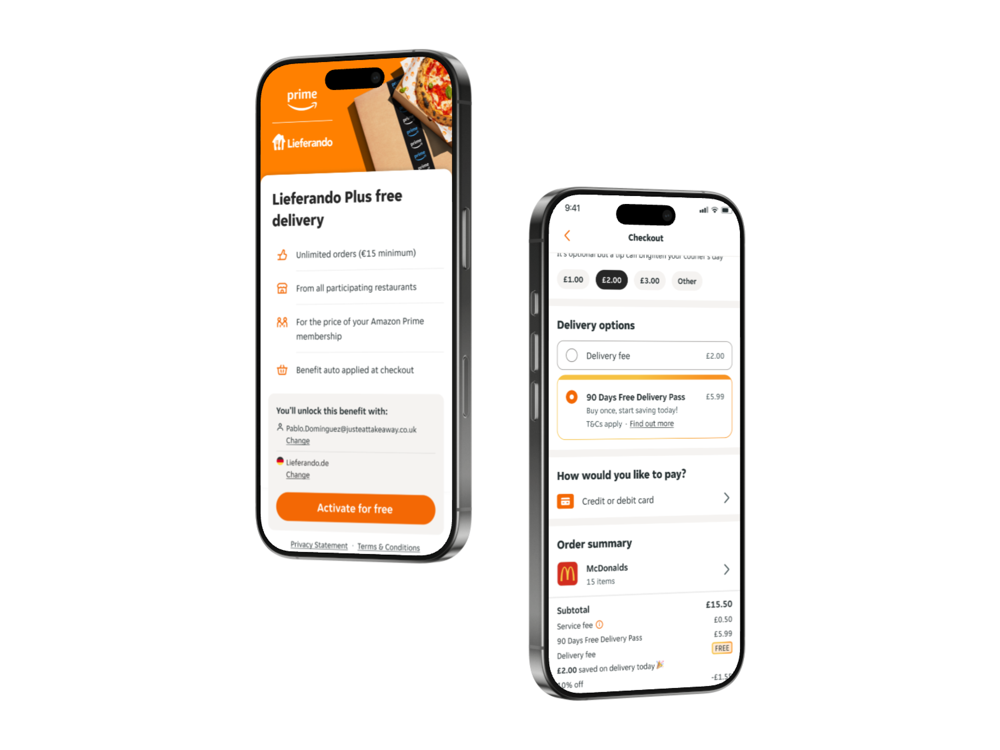

JET+ Loyalty —
The Full Story
Design Lead & Management

Just Eat had a retention problem. The business needed structural change.
Users treated Just Eat as an occasional treat — not a daily habit. Order frequency was inconsistent, the cost of re-acquiring lapsed customers was rising, and every competitor with a paid membership was pulling users away. Paid members at rival platforms were spending 24× more and ordering 10–30% more than non-members. 13% of lapsed Just Eat customers had left specifically because a competitor's loyalty programme was more compelling.
This wasn't a UX problem to be solved with better UI. It was a business model problem that required a design-led strategic intervention.
Three tensions the team had to hold simultaneously.
"Consumers primarily switched to competitors because they offered more compelling deals and superior reward programmes."
Before a single wireframe was sketched, I spent two weeks aligning the team around what problem we were actually solving. The business brief arrived framed as a feature request — "build a membership product." I reframed it as a retention strategy, mapped it to the three structural tensions, and used that framing to anchor every design decision that followed.
Three designers. Five squads. One shared vision that couldn't fragment.
Loyalty cuts across every part of the product — SERP, menu, basket, checkout, accounts. My three designers were each embedded in different product squads, working with different PMs, different engineers, different release cycles.
The risk wasn't bad design. The risk was incoherent design — three people making individually sensible decisions that added up to a fractured user experience.
Alignment as infrastructure, not overhead.
I introduced a fortnightly design sync with a fixed agenda: decisions made, decisions pending, and one cross-squad dependency to resolve together. This wasn't a status meeting — it was an alignment mechanism. It let me catch fragmentation early, before it reached dev handover. I also created a shared Figma workspace where all three designers' live work was visible in one place. Not for surveillance — for context. When designer A's checkout flow and designer B's account page needed to connect, they could see each other's work without a meeting.
A four-stage discovery framework I designed for the team.

A 90-day pass, not a subscription trap — designed around the psychology of commitment.
Research surfaced a clear pattern: subscription fatigue. Users didn't object to paying for value — they objected to being locked in. The standard recurring model felt like a trap. Our answer was a flexible, one-time-payment 90-day pass that made the initial entry feel genuinely risk-free, while the bundle structure rewarded commitment with meaningful savings.
By integrating it as a free-trial upsell directly in the checkout flow, we captured users at the exact moment of highest engagement — already in a spending mindset, already invested in an order.
Why I challenged the original brief.
The original brief asked for a standard subscription. I challenged it. I tasked one of my designers with a focused competitive audit and a round of concept testing against three models — standard subscription, one-time bundle, and a free trial — before we committed to any direction. The data came back clearly in favour of the bundle. Making space for that discovery before locking in the solution cost us two weeks but saved us from building the wrong product. That's a management decision, not a design one.
Unified design across web and native.


Built on PIE — JET's design system — with a JET+ premium layer.
I worked closely with the design systems team to ensure all JET+ components extended the existing PIE library — no divergence, full token compliance. The JET+ premium layer introduced a vibrant orange palette, dynamic gradients, and 3D iconography, while staying fully within the component architecture.
Every checkout touchpoint used a shared component library — ensuring the upselling experience felt consistent and trustworthy across web, iOS, and Android.
Upselling radio card — checkout delivery options. The dc__radio-card--selected state uses border-selected-brand token (#f36805) from the PIE system.
The numbers from Phase 1.
Two global brands, three markets, one activation moment.
I led the design and cross-platform integration of the Amazon Prime × Just Eat Takeaway partnership — free delivery for Prime members across Germany, Austria, and Spain. As the primary design bridge between JET senior leadership and global stakeholders at Amazon, I was responsible for both the outcome and the relationship.
Two global brands, with different design systems, different technical constraints, different timelines, and different definitions of "done." The single-URL login system Amazon required conflicted with Just Eat's multi-market URL architecture — meaning an additional country-selection step was unavoidable. I made the call to accept that friction rather than compromise the security model.
Holding the external pressure so the team could focus.
My designers were under pressure from both sides — Amazon's PMs wanted faster turnaround; internal stakeholders wanted more polish. I kept that pressure at my level. I acted as the buffer so the team could do focused work rather than respond to competing demands in real time. I also ran weekly stakeholder syncs with Amazon's team myself, bringing design decisions to those calls prepared with rationale and options — so my designers weren't asked to justify their choices in rooms they hadn't been part of.
Account linking and benefit activation across markets.


Partnership delivered.
Membership value isn't just a number — it's how it's framed.
We embedded four behavioural economics principles into the IA, copy, and interaction design to systematically reduce drop-off. I introduced these as design principles for the team — a shared framework for making micro-decisions consistently across five different squads.
From instinct to framework — how the team made decisions faster.
Before this project, "behavioural economics" was something individual designers applied inconsistently, based on personal knowledge. I ran a half-day workshop with the team to codify these four principles as named, documented patterns — each with a rationale and a worked example. Giving the team a shared vocabulary meant design reviews became faster and more precise. Instead of debating whether a copy change "felt right," we could ask: "which principle does this serve?" That shift from instinct to framework is what lets a small team make coherent decisions at speed.
The calls that didn't have a clean answer.
Good management isn't avoiding hard calls — it's making them clearly, communicating them honestly, and being accountable for the outcome. These were the three most consequential decisions I made on this project.
Made clearly. Communicated honestly.
Decisions backed by data — a culture of testing the team built together.
One of my goals was to move the team from a "launch and see" mindset to a genuine experiment-led culture. Each initiative had a hypothesis, a measured variant, and a defined primary metric — chosen before work started, not after.
Hypothesis first. Data decides.
A career-level shift, not just a process improvement.
These experiments didn't run themselves. I introduced a hypothesis-first brief template for every design initiative — no work started without a stated hypothesis and a defined success metric. Initially the team found this constraining; it felt like extra process. Within two months, it became the default way they thought. Designers who think in hypotheses write better briefs, push back on vague requests more confidently, and advocate for their work in commercial language. That's a career-level shift, not just a process improvement.
A design-led programme, shifting behaviour at scale.
Across both the JET+ one-time-payment model and the Amazon/Lieferando partnership, the combined initiative proved that a well-designed sign-up entry point — grounded in behavioural economics and led with instant value — can meaningfully shift user behaviour at scale.
From a live foundation to a personalised, AI-powered north star.
The next phase deepens personalisation, reinforces habit formation, and maximises ROI through intelligent segmentation. It's built on four behavioural archetypes from our discovery research.
Four pillars of the next phase.
The right reward, to the right customer, at the right time.

"The right reward, to the right customer, at the right time."
What managing this project taught me about leading designers.
I came into this project as a strong IC who'd been given management responsibility. I left it as a manager who understood the difference. Here's what shifted.
Four things I now know about design leadership.
6 million members. Three designers. Two partnerships. Three months.
Mark George
Lead Product Designer · Design Leadership